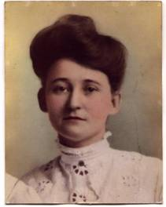

Baker
This is the ancestral line of Elizabeth May Baker, who was born Feb 24, 1869 in Gridley County, Kansas, was married in 1907 to Walter Andrew Varvel, and died Apr 24, 1953 in Bartlesville, OK (she was buried with her husband at the Memorial Park Cemetery in Bartlesville, OK). Our family has maintained memory of her line going back a few generations through Missouri to Kentucky, but had little more than guesses past this point. After picking up the trail in Kentucky, I found that this line (along with the Millers and some other associated families) has been extensively documented by a Dr. Harry Hyatt who has published some of it [Note- I still haven’t seen Hyatt’s Baker Book. Most of the early part of what follows was taken from this work, provided online by Kay Withers. I have spent some time in the VA State library and have found primary sources verifying some, but not all of the early Virginia line described here.]

Elizabeth May
Baker (1869-1953)
1. Martin
Baker[1] (c1600-c1666)
Martin
Baker, the immigrant, was born c1600 in England, and came to York County,
Virginia by 1633. A merchant from Plymouth, England, from a long line of Bakers
in Kent, he owned a 600 acres estate known as Moore House or Temple Farm near Yorktown.
He later moved to New Kent County, Virginia, probably around 1656, where he
owned 1750 acres and held the position of High Sheriff. Martin died c1666 at
the age of 66. Children of Martin Baker and (unknown):
2. John
Baker
Not much
information about John is available. Apparently he was born in New Kent County,
VA and had three sons:
3. Martin
Baker[2] (bef. 1690 – aft. 1744)
Martin was
born before 1690 in New Kent County, VA. By 1731 he was living in St. Paul’s
Parish, Hanover County, which had originally been part of New Kent. He died in
Hanover County sometime after 1744. Children:
4. Thomas
Baker (c1718-1774)
Thomas was
born c1718 in Hanover County, Virginia. In 1758 he acquired land on Falling
Creek in Chesterfield County, near his younger brother John Baker. Thomas
married Sarah Overton, who died in 1778 in Chesterfield County. Thomas also
died in Chesterfield County on September 10, 1774, at the age of 56. Thomas’
will was recorded in Chesterfield County Will Book 2, Page 233 [Transcription
of Thomas’ will]. Thomas and Sarah had the following children:
5. Martin
Baker[3] (c1740-1812)
Martin Baker[3] was born c1740 in Hanover County, Virginia. In 1761 he
married Mary Kimbrough, daughter of Bradley Kimbrough and Sarah Thompson, in
Hanover County (Mary was born in Hanover County, VA, and died in 1830 in
Nicholas County, KY). Sometime between 1774-1777 Martin and his family migrated
west to Charlotte County, VA. Martin served as an officer (1rst Lieutenant) of
the Charlotte County militia during the Revolution. Also living in Charlotte
County at the time was a man named William Griffith, who left in 1783 for the
settlement on the Greenbriar River (now West Virginia). This is important
because in 1787 Martin moved through Greenbrier, met up with Griffith, and
together (with a couple of other families – Collier, Conway, Hardy) traveled by flat boat down the Ohio River to Kentucky,
where they settled along the forks of the Licking River near Steele's run [History of Bourbon, Scott,
Harrison and Nicholas Counties, Kentucky, ed. by William Henry Perrin, O. L.
Baskin & Co., Chicago, 1882. p.
590]. This area was then part of Bourbon
County, KY, and became Nicholas County in 1799. The Baker family were prominent
early members of the community – for example, the first court for Nicholas
County was held in the home of Martin Baker Jr. Martin died Oct 12, 1812, and
his will was recorded in the Nicholas County Will Book A [transciption of
Martin[3]’s will]. Children of Martin Baker and Mary Kimbrough:
1.
Sarah (b: 1762
in Chesterfield; d: 1838)
2.
Anne (b: 1763
in Chesterfield; d: 1804 in KY)
3.
William (b:
1767 in Chesterfield; d: 1834 in MO)
4.
Thomas (b: Jun 5,
1769 in Chesterfield; d: 1840)
5.
Benjamin (b:
Aug 20, 1772 in Chesterfield; d: Sep 3, 1846)
6. Martin (b: Sep 24, 1773 in Chesterfield; d: Jan 1, 1848 in Knox County, MO)
7. Jane (b: 1774 in Chesterfield; m: Jun 21, 1791 to John Tittle)
8. James (b: Jul 10, 1777 in Chesterfield; d: 1840)
9. Judge John (b: 1784 in Charlotte County, VA; d: Aug 11, 1850 in Lewis County, MO)
10. Mary (b: May 30, 1785 in Charlotte County, VA; d: Aug 11, 1850 in Lewis County, MO)
6. Benjamin Baker (1772-1846)
Benjamin Baker was born August 20, 1772 in Chesterfield County, VA. At the age of about 13 he moved with the family to Kentucky. On Sep 2, 1795 Benjamin married Jane Miller, the daughter of William Miller and Jane Purdy, of nearby Millersburg in Bourbon County (Jane was born Nov 21, 1777 in Carlisle, Cumberland County, PA). Benjamin and Jane stayed in Bourbon County until 1822 when they moved to Callaway County, MO. Benjamin died Sep 30, 1846, and Jane died Oct 20, 1852, and both were buried there in Calloway County. Children of Benjamin and Jane:
1. John (b: 1798)
2. Thomas (1803-1869)
3. Martin (b: Jul 23, 1800 in Millersburg, KY; d: Dec 27, 1855; m: Aug 23, 1821 to Ann Miller West, daughter of Alvin West and Jean Miller, in Millersburg)
7. John Baker (1798- aft.1835)
John Baker was born in 1798 in Millersburg, KY. He married Elizabeth West, and came to Missouri with the rest of his family in 1822. Unlike his father and brothers who settled in Callaway County, John settled in neighboring Boone County. However, the location of John’s land is found along Boone’s eastern border with Callaway, so they could have been very close. [I haven’t located the Calloway County land] Records indicate that John bought three tracts of land in Boone County [see Boone plat map]:
1. Apr 6, 1824 – 80 acres (T48, R12, S35)
2. Jun 17, 1835 - 160 acres (T47, R11, S18)
3. Jul 31, 1834 – 80 acres (T47, R12, S24)
The 1830 Boone County census lists John and his wife (both 30-40), 2 sons 10-15, 1 son 5-10, 1 son <5, 1 daughter 5-10, and 1 daughter <5 (Cedar Township, p. 132). Of these, only his youngest son – Benjamin Thomas – has been identified.
8. Benjamin Thomas Baker (1826-1914)
Benjamin Thomas Baker was born Oct 26, 1826 in Boone County, MO. Around 1850 Benjamin went back to Kentucky to buy some horses, where he became acquainted with the father of America Samuel Ratcliff, whom he married and brought back to Missouri. They settled down in nearby Audrain County, MO. Benjamin died Feb 12, 1914, and America died the next day. They were both buried on the same day at Liberty Cemetery near Thompson, MO. Children of Benjamin and America:
1. John F. (b: Oct 1, 1851)
2. George T. (b: Apr 2, 1854)
3. Alphonso (b: Aug 23, 1856)
4. Alfred (b: Oct 13, 1858)
5. Ida Talbott (b: May 13, 1861)
6. Catherine (Kate) (b: Mar 17, 1864)
7. America A. (b: Aug 22, 1866)
8. Mary D. (b: Jan 12, 1869)
9. William M. (b: Sep 19, 1870)
10. Joseph Glenn (b: Jul 11, 1873; d: at age 22 from a coal mining injury)
9. Alphonso Baker (1856-1923)
Alphonso Baker was born Aug 23, 1856. He was married on Feb 2, 1876 in Audrain County, MO to Elizabeth Ann Poole, daughter of Melvin Pierce Poole and Mary Jane Williams (Elizabeth Ann was born Aug 1, 1882, and died Aug 19, 1926). Alphonso and Elizabeth left Audrain County and settled in Hiatsville, KS (which no longer exists), making the journey by train. They set up a church for the neighbors, though it never grew – probably in part because Alphonso refused to allow musical instruments. During the early 1880’s they moved to Fort Scott, where Alphonso served as Chief of Police. According to his grandson Walter Alphonso Varvel, the town lost a bit of fine revenue during this time, since instead of locking up the town drunks he had the habit of taking them home and sobering them up. Walter also recalled that he was a kindly, heavy man, whom he liked very much – and referred to as “Pops” Baker. He was also bald and colorblind. Alphonso died Aug 30, 1923. Children of Alphonso and Elizabeth Ann:
1. Thomas Melvin (b: Feb 12, 1877 in Audrain County, MO)
2. John Alphonso (b: Dec 25, 1878 in Audrain County, MO; d: Aug 6, 1905 in Ft. Scott, KS)
3. Edward (b: Mar 8, 1881 in Audrain County, MO)
4. Elizabeth May (b: Aug 1, 1882 in Audrain County, MO)
5. America Jane (b: Dec 3, 1885 in Bourbon County, KS)
10.
Elizabeth May Baker
Elizabeth
May Baker was born on August 1st, 1882 in Hiatsville, Bourbon
county, Kansas. After high school she enrolled in a business college, though
before she finished she went to work for the Missouri Pacific Railroad in Ft.
Scott as a secretary to the foreman – the first woman they had employed. It was
there she met Walter Andrew Varvel, who was working fitting steam pipes. Walter
and May were married in 1907, and they lived in a house on 218 Lowman St., a
“narrow two story house with a garden out back and the necessary small
building” in the western part of Ft. Scott. In 1917 they decided to leave Ft.
Scott and get a farm- in part because Walter thought the fumes at work (he
often worked 12 hours shifts for about 75 cents a day) were causing him
headaches, and was part of a work strike that was never settled. He sold the 40
acre farm that he had grown up on and bought an 80 acre one 7 miles SE of Ft.
Scott, where the family remained until 1943, when they moved near Bartlesville,
OK to be nearer to their daughter Frances. Children of Walter Varvel and
Elizabeth May Baker: